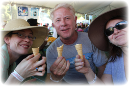

B&S flying kites in NC
2015 was another busy and blessed year for Brie and Steve. Here is a brief review of some of the highlights.  Cooking with Brie and Steve
Work was one of the main features of this year. Brianna completed her first year working at Cornerstone Research as an economic consultant. She has enjoyed and been challenged by the increasing responsibilities that she has been given as she works on labor, false advertising, and breach of contract cases. On the more academic front, Brianna (in her spare time) taught a master's level course in Labor Economics at California State University, East Bay and had a co-authored paper recently accepted at a peer-reviewed journal. 
Garlic ice cream with Steve's family
Steve also had lots going on with work. After five and a half years working on data centers, Steve moved this summer to a newly-formed JavaScript libraries infrastructure team, which has provided many new challenges and learning opportunities, and also allows him to contribute some of his work to open source projects. He’s excited to be paving the way for developers to adopt the newest JavaScript technologies that previously were infeasible to use. Brie pets a whale shark
Despite all of the work, Brie and Steve had some lovely vacations this year. In January, they spent a weekend in San Francisco and visited Alcatraz Island. They joined Brianna's family in the Outer Banks, North Carolina, for a fun filled week (cooking, driving jeeps on the beach to see wild horses, kayaking down "Snake Alley," building sand castles, etc.), and also spent some time with Brie’s extended family for Fourth of July (in SoCal) and at a family reunion in Kansas. Steve with Brie's family in Albuquerque
Christmas with Brie, Steve, and Parmie
The biggest development this year is the anticipation and preparation for Brianna and Steve's first child (due March 2016), codenamed Parmesan (a bit cheesy perhaps but so is Brie's nickname). Brie and Steve are excited parents-to-be!
Many blessings to you, now and always! |